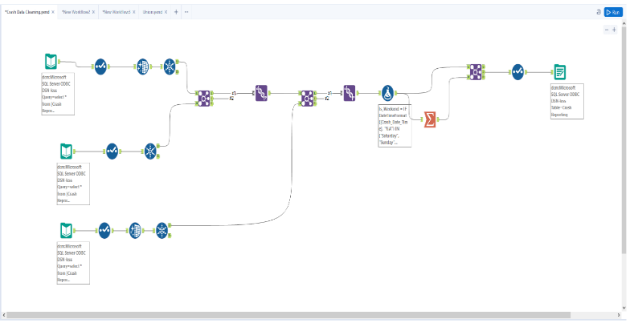
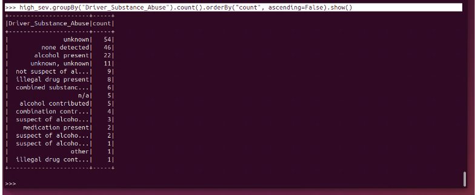
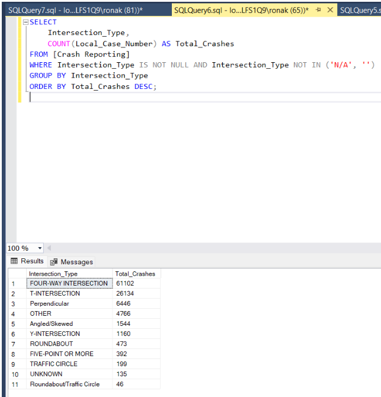

Montgomery County Traffic Crash Analysis
Overview
- Analyzed crash data from Montgomery County, Maryland to identify key contributing factors behind injury-related and fatal crashes.
- Cleaned and integrated over 300,000 records from three datasets (Drivers, Non-Motorists, Incidents) using Alteryx and SQL Server.
- Modeled the data with a star schema and built dashboards in Power BI to visualize trends by weather, lighting, intersection type, and more.
- Used PySpark and Snowflake for large-scale querying and pattern discovery involving substance abuse, collision types, and time-based factors.
Technologies Used
- Alteryx (ETL)
- SQL Server Management Studio (SSMS)
- Power BI
- Snowflake (Cloud Data Warehouse)
- PySpark (Big Data Analysis)
- Python
Screenshots



